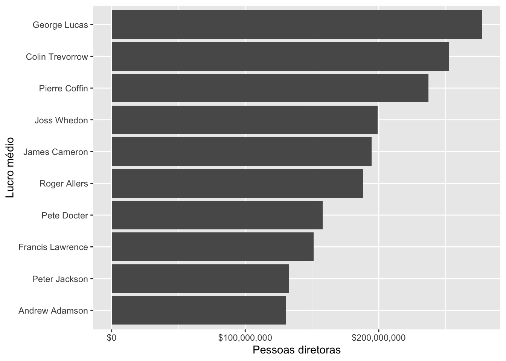

No blog da Curso-R, colaborei com três posts que apresentam dicas para fazer tabelas, gráficos e relatórios em R. Leia os posts completos através dos links a seguir:
Olá!
Este post é uma continuação do post onde apresentamos os trabalhos premiados no curso R para Ciência de Dados I, e baseado nos feedbacks que enviamos para as pessoas alunas, escrevemos algumas dicas de formatação de tabelas. Neste post, apresentaremos algumas dicas para elaborar gráficos com o pacote ggplot2! Gráficos são representações visuais dos dados. Se bem construído, a informação nele é absorvida mais rapidamente. Além disso, funcionam como pausas, deixando a leitura de um relatório menos cansativa.
Dicas para formatar melhor seus gráficos
Primeiro vamos carregar o pacote tidyverse:
O próximo passo é carregar a base que utilizaremos como exemplo: a base de filmes do IMDB.
imdb <-
read_delim(
"https://raw.githubusercontent.com/curso-r/202010-r4ds-1/master/dados/imdb2.csv",
";",
escape_double = FALSE,
trim_ws = TRUE
) Exemplo: Diretores de sucesso!
Preparar a base de dados
Neste exemplo, vamos criar um gráfico que apresente o lucro médio dos filmes segundo o diretor, para identificar pessoas diretoras de sucesso! Primeiro precisaremos obter as informações necessárias para criar o gráfico.
A base imdb apresenta 3713 linhas, sendo que cada linha possui informação de um filme. Dentre as variáveis presentes na base são o orçamento e a receita dos filmes. Com essas variáveis, é possível calcular o lucro de cada filme. Porém, antes vamos remover os filmes das quais não temos as informações de orçamento e/ou receita (ou seja, NA). Existem diversas formas de remover os valores faltantes - NA - de uma base, então utilizaremos a função drop_na(), do pacote tidyr, indicando como argumento as colunas em que desejamos remover os NA. Depois, utilizando a função mutate(), criaremos uma nova coluna que apresenta o valor do lucro de cada filme:
Para obter a média do lucro por diretor, podemos utilizar as funções group_by() para agrupar por diretor, e summarise() para fazer as sumarizações necessárias: neste caso calcularemos a média (com a função mean()), e também o número de filmes por diretor (com a função n() - que conta o número de linhas, sendo que cada linha representa um filme).
imdb_lucro_diretores <- imdb_lucro %>%
group_by(diretor) %>%
summarise(media_lucro = mean(lucro),
numero_filmes = n())
head(imdb_lucro_diretores)# A tibble: 6 × 3
diretor media_lucro numero_filmes
<chr> <dbl> <int>
1 Aaron Schneider 1676553 1
2 Aaron Seltzer 28546578 1
3 Abel Ferrara -11272676 1
4 Adam Carolla -1394057 1
5 Adam Goldberg -1647420 1
6 Adam Marcus 13435068 1Porém não podemos apresentar todas as 1419 pessoas diretoras no mesmo gráfico, pois não seria legível! Precisamos definir alguns critérios para selecionar as pessoas diretoras que aparecerão no gráfico.
O primeiro critério escolhido é ter dirigido mais que um filme! Com a função filter(condicao), esse critério é possível de ser satisfeito. Depois, ordenaremos a base de forma decrescente segundo o lucro médio, assim teremos nas primeiras linhas as pessoas diretoras com os maiores lucros médios. Isso é possível de ser feito com as funções arrange(desc(variavel)). Com a função slice(), podemos ‘cortar’ a base: utilizando como argumento 1:10, estamos solicitando apenas as linhas 1 até 10.
Neste caso, o resultado destes critérios será uma base com as 10 pessoas diretoras com maior lucro médio e que tenham dirigido mais de um filme.
imdb_top_diretores <- imdb_lucro_diretores %>%
filter(numero_filmes > 1) %>%
arrange(desc(media_lucro)) %>%
slice(1:10)
imdb_top_diretores# A tibble: 10 × 3
diretor media_lucro numero_filmes
<chr> <dbl> <int>
1 George Lucas 277328296 5
2 Colin Trevorrow 252717532. 2
3 Pierre Coffin 237275640 2
4 Joss Whedon 199202360. 3
5 James Cameron 194620985 6
6 Roger Allers 188543668. 2
7 Pete Docter 158113780. 3
8 Francis Lawrence 151100394. 5
9 Peter Jackson 132967515 5
10 Andrew Adamson 130611730 4Criar o gráfico
Agora podemos começar a criar o gráfico (e apresentar algumas dicas!).
O código abaixo apresenta um gráfico de barras (geom_col()) simples, criado com o pacote ggplot2, e vamos melhorá-lo por etapas!
A primeira dica é: quando os nomes no eixo x estiverem se sobrepondo (no caso deste gráfico, o nome dos diretores), podemos inverter os eixos:
Agora está muito mais fácil de ler os nomes dos diretores!
Quando trabalhamos com variáveis que representam dinheiro (como no caso da variável lucro), podemos formatar os valores para que fiquem formatados como dinheiro, utilizando a função scales::dollar() :
imdb_top_diretores %>%
ggplot() +
geom_col(aes(y = diretor, x = media_lucro)) +
scale_x_continuous(labels = scales::dollar)Agora que os eixos estão bem formatados, podemos formatar a legenda para ficar claro o que cada eixo significa! A função labs() permite escrever o que desejamos que apareça como legenda em cada elemento (por exemplo: labs(x = "Legenda do eixo X", y = "Legenda do eixo Y") .
imdb_top_diretores %>%
ggplot() +
geom_col(aes(y = diretor, x = media_lucro)) +
scale_x_continuous(labels = scales::dollar) +
labs(x = "Pessoas diretoras", y = "Lucro médio")É interessante também ordenar as barras do gráfico de barras, pois facilita a comparação das categorias (neste caso, as pessoas diretoras).
Para isso, podemos tratar a variável diretor como um fator (factor) 1, e ordenar os níveis (levels) de diretores segundo a variável media_lucro. A função fct_reorder() do pacote forcats pode ser utilizada para isso, pois ela ordena os níveis de um fator utilizando a ordem de outra variável.
imdb_top_diretores %>%
mutate(diretor = forcats::fct_reorder(diretor, media_lucro)) %>%
ggplot() +
geom_col(aes(y = diretor, x = media_lucro)) +
scale_x_continuous(labels = scales::dollar) +
labs(x = "Pessoas diretoras", y = "Lucro médio")
Por último (mas também importante) é uma dica estética, porém tem o poder de deixar o gráfico muito mais atrativo! Existem várias funções no pacote ggplot2 com temas para os gráficos, e elas usam o prefixo theme_ (por exemplo, theme_light()). Além disso, existem pacotes que oferecem mais temas, como o ggthemr e o ggthemes!
O exemplo abaixo utiliza o tema theme_light():
imdb_top_diretores %>%
mutate(diretor = forcats::fct_reorder(diretor, media_lucro)) %>%
ggplot() +
geom_col(aes(y = diretor, x = media_lucro)) +
scale_x_continuous(labels = scales::dollar) +
labs(x = "Pessoas diretoras", y = "Lucro médio") +
theme_bw()O exemplo abaixo utiliza o tema flat do pacote ggthemr:
imdb_top_diretores %>%
mutate(diretor = forcats::fct_reorder(diretor, media_lucro)) %>%
ggplot() +
geom_col(aes(y = diretor, x = media_lucro)) +
scale_x_continuous(labels = scales::dollar) +
labs(x = "Pessoas diretoras", y = "Lucro médio") +
ggthemr::ggthemr("flat")$theme
Conclusões
Depois dessas dicas, o resultado é um gráfico mais atraente e informativo do que a versão básica que fizemos com o ggplot2 no começo do post!
Existem infinitas possibilidades para criar visualizações de dados com R. Neste post apresentamos algumas dicas simples para formatar melhor nossos gráficos, e no próximo post apresentaremos mais algumas dicas sobre relatórios com o pacote R Markdown.

Footnotes
Falamos um pouco sobre fatores no post anterior.↩︎